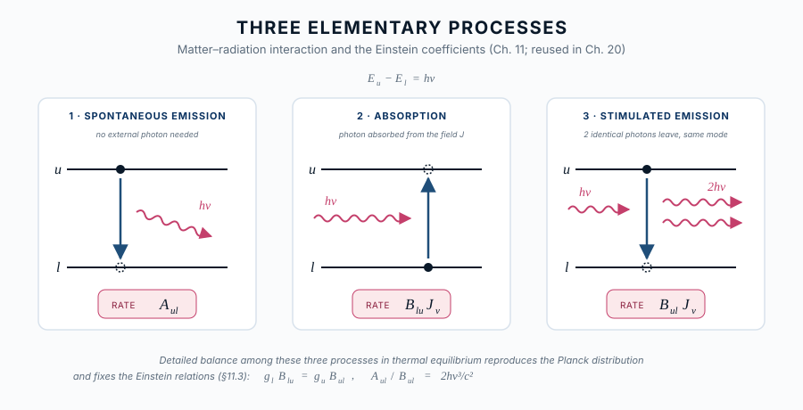

第20章 線形成 ― 吸収線と輝線の物理
この章の主題：第19章で見たさまざまな線スペクトルは、すべて「原子・分子の離散的遷移と、その場の放射場との相互作用」の結果として理解できる。本章では、第11章で導入した Einstein 係数 A_{ul}, B_{lu}, B_{ul} を線スペクトルの主役として再登場させ、線吸収・線輝線・線源泉関数 を逆引きで体系化する。これは連続スペクトルの第4-5章（放射輸送と源泉関数）の 線スペクトル版 にあたる。
この章の中心地図
水素線スペクトルの地図 ― 二層構造
第一層：イコニック・アンカー（リュードベリ公式）
\frac{1}{\lambda} = R_\mathrm{H} \left( \frac{1}{n_1^2} - \frac{1}{n_2^2} \right) \tag{22.1}
線スペクトルの「骨格」を一目で示す。R_\mathrm{H} は基本定数の組合せ、1/n^2 は束縛状態のエネルギー、離散性が「線が存在する理由」を語る。
第二層：構造的マップ（Hα を標準例とした線吸収係数）
\alpha_\nu = \frac{\pi e^2}{m_e c} \, f_{lu} \, n_l \, \phi(\nu - \nu_0) \tag{22.2}
| 因子 | 物理的意味 | 対応する章 |
|---|---|---|
| \alpha_\nu | 観測量（線吸収係数） | 第20章 |
| \pi e^2 / m_e c | 古典極限の線強度 | 第21章＋第VIII部 |
| f_{lu} | 振動子強度 | 第21章 |
| n_l | 下準位の占有数 | 第20章＋Part III |
| \phi(\nu - \nu_0) | 線形（自然・Doppler・Voigt） | 第22章 |
| \nu_0 | 線位置（リュードベリ） | 第21章 |
方針：本章では中心地図 \alpha_\nu = (\pi e^2/m_e c) f_{lu} n_l \phi(\nu-\nu_0) の n_l 因子 と 線形成（吸収 or 輝線）の選択 に焦点を当てる。f_{lu} は第21章、\phi(\nu-\nu_0) は第22章で別途扱う。
この章で答える問い
- 同じ水素 H\alpha 線が、太陽では吸収線、HII 領域では輝線になるのはなぜか
- 線の等価幅とは何で、なぜ観測量として有用なのか
- LTE では何が単純で、non-LTE では何が複雑になるのか
- curve of growth は何を、どのように測る道具なのか
到達目標
この章を読み終えると、読者は次のことができるようになる：
- 線の吸収・自発放出・誘導放出を Einstein 係数で表現し、各々の物理的意味を述べられる
- 線源泉関数とプランク関数の関係を、LTE と non-LTE で区別して説明できる
- 線の等価幅と curve of growth から物理量を読み取る基本手順を理解する
20.1 線の観測量 ― 等価幅
[本文目安：B2-B3]
吸収線の 観測量 として最も標準的なのが 等価幅（equivalent width, EW）。
W_\lambda \equiv \int_\text{line} \frac{I_c - I_\lambda}{I_c} d\lambda \tag{22.3}
ここで I_c は線がない場合に予想される連続光強度、I_\lambda は実際の観測強度。W_\lambda は 「線によって連続光からどれだけ光が引き抜かれたか」を波長単位で表した量。物理的には：
- 浅くて広い線と、深くて狭い線が 同じ W_\lambda になる場合がある
- 線形（profile）の詳細によらない積分量
- 観測しやすく、理論との比較がしやすい
輝線についても同様に、連続光からの 余剰光 の積分として等価幅を定義する。
注意（観測）：等価幅は 観測スペクトル分解能の限界以上の線 には鋭敏。一方、強く飽和した線（線芯が完全に黒）では、追加の物質を加えても等価幅はゆっくりとしか増えない（§20.6 の curve of growth の「飽和域」）。等価幅から物理量を読むには、線がどの「成長領域」にあるかを意識する必要がある
20.2 線の三つの素過程 ― Einstein 係数の再登場
[本文目安：B3]
第11章 §11.2 で導入した Einstein 係数（同じ図を再掲、図 22.1）：

- A_{ul}：自発放出（spontaneous emission）― u \to l で光子放出。確率 [s^{-1}]
- B_{lu}：誘導吸収（induced absorption）― l \to u で光子吸収
- B_{ul}：誘導放出（stimulated emission）― u \to l、入射光と同じモードへ放出
これらは原子物理（第21章で再導出）と熱平衡条件（第11章 §11.3 の Einstein 関係式）
\frac{A_{ul}}{B_{ul}} = \frac{2h\nu^3}{c^2}, \quad \frac{g_l B_{lu}}{g_u B_{ul}} = 1 \tag{22.4}
で結ばれる。ここで g_l, g_u は下/上準位の縮重度。これらは 線形成の主役 である。
線吸収係数を Einstein 係数で書き直すと
\alpha_\nu = \frac{h\nu_0}{4\pi} n_l B_{lu} \phi(\nu - \nu_0) \left[1 - \frac{g_l n_u}{g_u n_l}\right] \tag{22.5}
右辺の括弧内が 誘導放出補正。n_u > 0 なら吸収を弱める効果を表す。
問い：誘導放出補正 [1 - g_l n_u/(g_u n_l)] が ゼロ になるのはどんな条件か？ 負 になるのはどんなとき？ 物理的意味は？
短答：
- ゼロ：g_l n_u/g_u = n_l ― 上下準位の占有が同等。「これ以上吸収できない」
- 負：n_u/g_u > n_l/g_l ― 準位反転（population inversion）。負の吸収係数 = 増幅（メーザー、レーザー）
もう一歩：銀河中心の H_2O メーザー（22 GHz）、星形成領域の OH メーザー（1.6 GHz）はこの 天然のレーザー 現象。観測すれば、n_u/g_u > n_l/g_l を実現する非平衡ポンプ機構（衝突、放射ポンプ）の存在が逆引きされる
20.3 線源泉関数 ― 連続スペクトルから線スペクトルへ
[本文目安：B3]
第5章 §5.4 で定義した ソース関数 S_\nu は、線スペクトルでは
S_\nu^\text{line} = \frac{j_\nu^\text{line}}{\alpha_\nu^\text{line}} \tag{22.6}
の形で構成される。j_\nu^\text{line} は線放射係数（自発放出 + 誘導放出からの寄与）、\alpha_\nu^\text{line} は線吸収係数。Einstein 係数を使うと、\phi(\nu-\nu_0) が両者で共通になる前提のもとで
S_\nu^\text{line} = \frac{A_{ul} n_u}{B_{lu} n_l - B_{ul} n_u} = \frac{2h\nu_0^3/c^2}{(g_u n_l)/(g_l n_u) - 1} \tag{22.7}
これは形式的に プランク関数と同じ構造 だが、h\nu/k_BT の代わりに \ln[(g_u n_l)/(g_l n_u)] が指数因子に入っている。これを 「励起温度」（excitation temperature）T_\text{ex} を使って
\frac{g_u n_l}{g_l n_u} = e^{h\nu_0/k_B T_\text{ex}} \tag{22.8}
と書き直すと、S_\nu^\text{line} = B_{\nu_0}(T_\text{ex})。すなわち 線源泉関数は、励起温度に対応する黒体スペクトル。
用語：励起温度 T_\text{ex} は、観測者が観測される線の強度から 逆引き で求める「上下準位の占有比を Boltzmann 分布で書いたときの温度」。物理的に物質と熱平衡している温度とは限らない（LTE / non-LTE の区別、§20.4-§20.5）
対応（観測）：観測される線の輝度温度から T_\text{ex} を測れる ― これが線スペクトルから物理状態を逆引きする最初のステップ
20.4 LTE 線形成 ― 線源泉関数 ≈ B_\nu(T_\text{kin})
[本文目安：B3]
LTE（局所熱平衡、第6章 §6.5）が成り立つ環境では、占有数 n_l, n_u は局所の キネティック温度 T_\text{kin}（粒子の運動エネルギー由来の温度）に対する Boltzmann 分布で書ける：
\frac{n_u}{g_u} = \frac{n_l}{g_l} e^{-h\nu_0/k_B T_\text{kin}} \tag{22.9}
すると T_\text{ex} = T_\text{kin} となり、線源泉関数は キネティック温度のプランク関数：
S_\nu^\text{line, LTE} = B_\nu(T_\text{kin}) \tag{22.10}
これが「LTE の良い」点 ― 線スペクトルが連続スペクトルと同じ温度 で記述できる。例えば、恒星大気の Eddington-Barbier 近似（第15章 §15.3）が線スペクトルにも適用できる：観測される線輝度 = 線で光学的深さ 2/3 になる層の温度 T_\text{kin} のプランク関数値。
問い：LTE で、線が 吸収線として 観測される条件は何か？
短答：観測する視線方向に、温度が深さとともに上がる 温度勾配がある場合（恒星大気の通常）。線の中心では浅い表面しか見えず（T が低い）、連続光は深い層から（T が高い）。差し引き、線が 連続光より暗く 見える → 吸収線。
逆に、温度が深さとともに 下がる 場合（彩層・コロナ）や、観測対象がガス雲そのもの（背景の連続光がない）では、輝線として現れる。吸収線 ↔︎ 輝線は、温度構造と背景光の組合せ で決まる
20.5 non-LTE 線形成 ― いつ・なぜ LTE が破綻するか
[本文目安：B3-B4]
実際には LTE が破綻する状況が多い：
- 希薄ガス（衝突率が低い）
- 強い放射場（放射過程が衝突過程より速い）
- 急激な温度勾配（局所平衡が追いつかない）
このとき、占有数 n_l, n_u は Boltzmann 分布から外れ、励起温度 T_\text{ex} がキネティック温度 T_\text{kin} と乖離する。線源泉関数は B_\nu(T_\text{ex}) のままだが、T_\text{ex} が物理温度を反映しない。
non-LTE 線形成を扱う数値的枠組み：
- 占有数の方程式：各準位への入力（励起・吸収）＝各準位からの出力（脱励起・放出）の収支
- 放射輸送方程式：占有数で決まる S_\nu と \alpha_\nu から、放射場を解く
- 両者の反復：放射場と占有数が 自己無撞着 になるまで反復
これが non-LTE radiative transfer の標準枠組み。
注意（観測）：「LTE 解析からの偏差」は、観測者が誤った結論に至る源。一例として、恒星大気の Fe I 線 を LTE で解析すると、紫外側で Fe の over-ionization（過電離） により占有数が Saha 予測を下回り、組成決定で 0.1〜0.4 dex のずれが生じることが知られている（Asplund 2005 のレビュー）。non-LTE 補正は現代の線スペクトル解析の必須道具となっている
用語の整理（第6章 §6.5 と整合）：
- LTE：物質側の占有数が局所キネティック温度の Boltzmann/Saha 分布 → 線源泉関数 = B_\nu(T_\text{kin})
- non-LTE：物質側の占有数が局所温度の Boltzmann から外れる → 線源泉関数 ≠ B_\nu(T_\text{kin})、しかし依然として = B_\nu(T_\text{ex})
- 熱的 vs 非熱的：粒子のエネルギー分布が Maxwell-Boltzmann か否か。LTE / non-LTE とは別の軸（第15章 §15.1）
20.6 curve of growth ― 等価幅から柱密度を測る
[本文目安：B3]
弱い吸収線から強い吸収線まで、観測される 等価幅 W と 柱密度 N \equiv \int n_l\, ds の関係は、curve of growth（等価幅曲線, 成長曲線）として知られる：
W(N) = \begin{cases} \propto N & \text{(線形領域)} \\ \propto \sqrt{\ln N} & \text{(飽和領域)} \\ \propto \sqrt{N} & \text{(減衰翼領域)} \end{cases} \tag{22.11}
物理的解釈：
- 線形領域：吸収線の光学的深さ \tau < 1。等価幅は柱密度に比例
- 飽和領域：線芯が完全に黒（\tau \gg 1）。中心が「これ以上吸収できない」、ただ広がるだけ
- 減衰翼領域：自然幅・衝突幅が支配（第22章）。Lorentz 翼の \propto \sqrt{N} 依存
対応（観測）：恒星・QSO 吸収線スペクトルの解析で、curve of growth は 観測等価幅 → 柱密度 を求める基本道具。化学組成、QSO 視線方向の星間吸収系の柱密度測定などに使われる。第23章 §23.2 で本格的に応用する
20.7 使えるようになった道具
- 等価幅 W_\lambda ― 線の最も基本的観測量
- Einstein 係数による吸収・輝線・誘導放出の統一記述
- 線源泉関数 S_\nu^\text{line} = B_\nu(T_\text{ex}) と励起温度の概念
- LTE と non-LTE の区別、いつどちらが使えるか
- curve of growth ― W \to N の換算手段
この章で何がわかったか
中心地図に戻る
本章で、中心地図 \alpha_\nu の n_l 因子 と 線形成の選択（吸収 or 輝線） が物理的に解読された：
- n_l は LTE では Boltzmann/Saha、non-LTE では statistical equilibrium で決まる
- 線が吸収か輝線かは、線源泉関数 S_\nu^\text{line} = B_\nu(T_\text{ex}) と背景の連続光輝度の比較で決まる
- 等価幅 W と柱密度 N は curve of growth で結ばれる
次章では中心地図のもう一つの因子 ― 振動子強度 f_{lu} ― を、原子物理から逆引きする。
演習問題
演習問題は、本書全体の章構成が固まったあとに、各部を通じて統一的に作成する予定。
さらに学ぶための参考文献
- Mihalas, Stellar Atmospheres (Freeman, 2nd ed., 1978) — 線形成と non-LTE の古典
- Hubeny & Mihalas, Theory of Stellar Atmospheres (Princeton, 2014) — 現代版、non-LTE radiative transfer の標準書
- Rutten, Radiative Transfer in Stellar Atmospheres (Lecture notes, Utrecht) — 線形成の入門的講義ノート
- Spitzer, Physical Processes in the Interstellar Medium (Wiley, 1978) — curve of growth の標準扱い